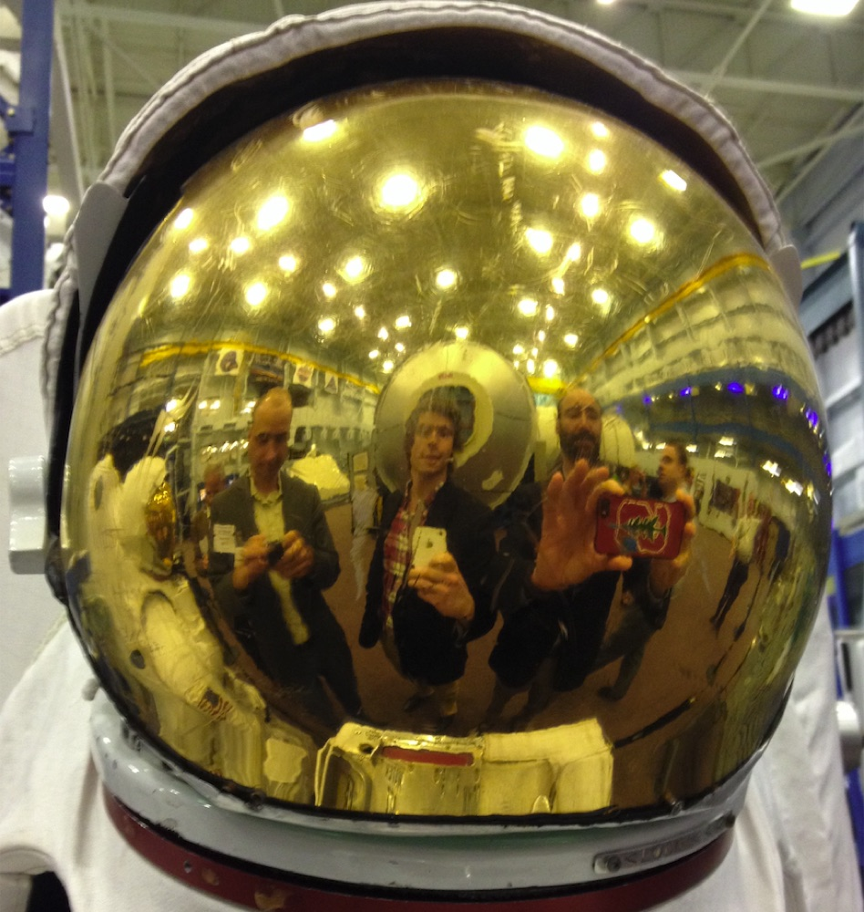

About
I love to tinker and build things, watch them do work that existing toolsets couldn’t tackle. In medicine, molecular engineering can launch total modality shifts – from chemicals to biologics, then siRNAs and antisense, then gene editing – creating real unlocks of biological control. We’ve become better and better at hitting these technological inflection points, of late pushing faster than ever with serious computational tailwinds, yet we remain essentially stagnated when it comes to which targets need hitting in the first place. But this is a bio, not an op-ed, so more on that later.
For the better part of a decade I’ve been a high-throughput molecular engineer, designing and running highly parallel synthetic biology pipelines to discover peptide bits and protein bobs that mute or unmute target genes. The goal is epigenetic editors able to conduct the orchestra of gene expression, smoothing out rough notes that cause disease, and do so more safely than is possible with ‘conventional’ gene editing systems like CRISPR-Cas9, base editing, or gene replacement therapy. By editing the epigenome, we fine-tune the genetic program without cutting or damaging the DNA.
At Epicrispr Biotechnologies, I led proteomic screening and engineering campaigns, key elements of the modality platform that underlies EPI-321, a silencer now in First-in-Human trials for facioscapulohumeral muscular dystrophy, and EPI-331, a durable gene activator heading toward Duchenne. Then as Founding Head of Research at General Control, I led a team accelerating that primitive to generate best-in-class epigenetic editors against a handful of cardiometabolic, muscular, and longevity-related targets, by installing the power of gene modulation into safer and more widely tolerable vehicles of drug delivery amenable to larger patient populations and multiplexed targeting. Because the commonest diseases of aging are multifactorial, the ability to precisely modulate multiple genes in parallel is a distinct therapeutic advantage.

Prior to the Bay's biotech scene, I earned a PhD in Human Genetics at Johns Hopkins School of Medicine. Early on I was awarded a NASA grant to study epigenetic effects of spaceflight on ISS astronauts. My thesis centered on Mendelian disorders of chromatin machinery, where genetic mutations in epigenetic regulators disrupt human development across many bodily systems. The focus was a histone methyltransferase protein and its role in neural stem cell development, discovering aberrant mechanisms of oxygen-sensing as a key driver of that disease. A UCSF postdoctoral fellowship followed, integrating genome-scale, multi-omics datasets into a machine-learning classifier to decipher the roles of protein-coding versus long non-coding RNA genes in neuronal differentiation – but shortly into that I followed the call to industry.
Outside of these, I'm a road-trip aficionado and extreme-temperature connoisseur, and pursue a passionate affection for diving at depth – with, and especially without, air – as a means to deeply connect with physiology and its relation to the mind. Freediving is a small sport that profoundly influences our conception of biological limits and how to surpass them.
Connect
Email LinkedIn GitHub Google Scholar Instagram
More about me
Consumer genetic profiling gives us ancestry in proportions, estimated against reference panels. I wanted to see the history behind those percentages: when, where, and how these populations took shape. Haplogroup labels offer a way into that history through published estimates of common-ancestor dates and geographic distributions. Underneath my “35.6% Southern European” result, there’s a paternal lineage shared across the Balkans and southern Italy, and a maternal branch linked to post-glacial expansion from southwestern Europe. My 10.8% Ashkenazi estimate adds another population history, with research pointing to a role for Jewish communities in Italy. This brings the dates, geography, and proportions together. You can explore your own results with deep-ancestry.
My results: 23andMe and deep-ancestry. Population context: Achilli 2004 · Sankararaman 2012 · Costa 2013 · Sarno 2014 · Carmi 2014.
Show the timelineHide the timeline
The longer history
Composition, reported paternal haplogroup and Neanderthal ranking: 23andMe (v3 array, 2011; phased and imputed r6 output, 2026). Maternal H3: deep-ancestry analysis of the raw file; the supplied analysis reports 6776 T>C and excludes 17 tested subclades without assigning a finer branch. H3* here means no finer branch was assigned from these data. Nomenclature: PhyloTree mtDNA build 17. H3 age and sample frequencies: Achilli et al., Am J Hum Genet 75:910–918 (2004), doi:10.1086/425590. Neanderthal gene-flow timing: Sankararaman et al., PLoS Genet 8:e1002947 (2012), doi:10.1371/journal.pgen.1002947. Ashkenazi maternal-lineage history: Costa et al., Nat Commun 4:2543 (2013), doi:10.1038/ncomms3543. E-V13 sample frequency and estimated common ancestor: Sarno et al., PLoS ONE 9:e96074 (2014), doi:10.1371/journal.pone.0096074. Ashkenazi bottleneck estimate: Carmi et al., Nat Commun 5:4835 (2014), doi:10.1038/ncomms5835. Dates use the cited studies' estimates and assumptions; calendar equivalents are approximate.